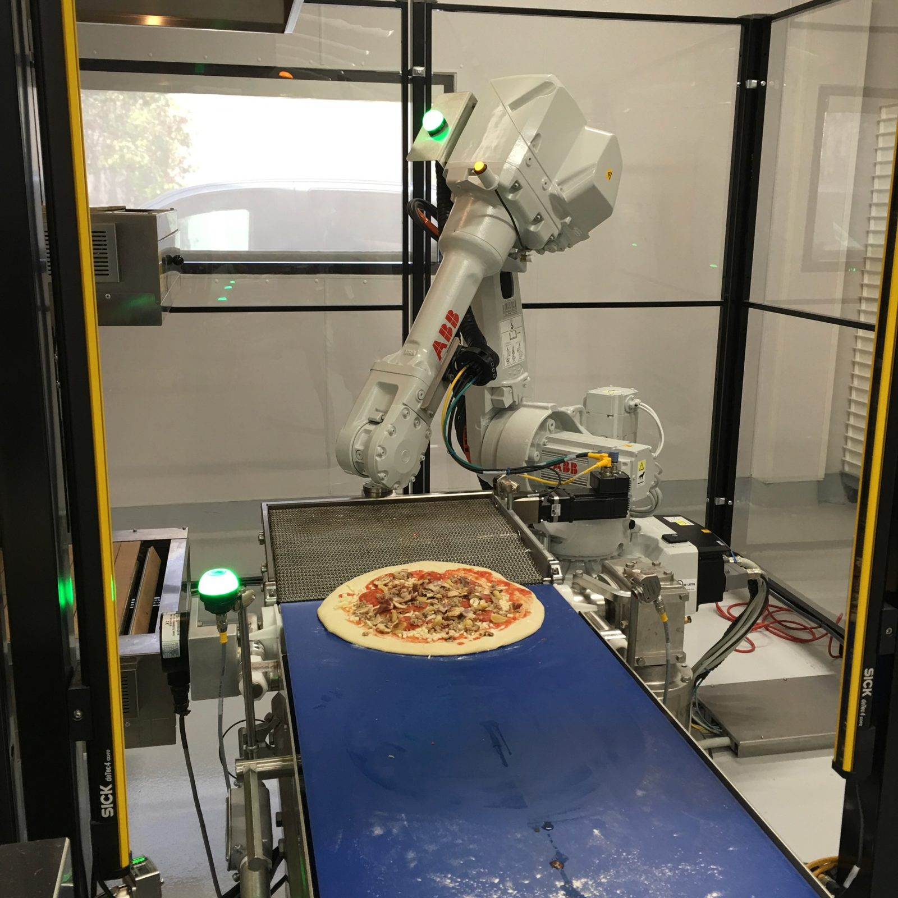

Brew Grit · Fractional executives for founders in food tech, automation & AI · San Francisco Bay Area & Japan
Lab to fab.Idea to revenue.
Brew Grit puts an operator who has done the job into whatever seat your company needs right now: engineering, revenue, fundraising or hiring. Chief Grit Officer Shawn Lange founded Lab2Fab, built the robotic work cells on the floor at Apple, Tesla and SpaceX, sold the company to The Middleby Corporation and ran it as a division for eight years. Core areas: food tech, automation, and AI, from software agents to Physical AI. Pre-seed to Series B, prototype to production, first customer to repeatable revenue.
Fractional CXO · Pre-seed to Series B Food tech · Automation · Physical AI & agentic AI
Founders in food tech, automation and AI play every role until they can afford to hire for it. Brew Grit fills the gap with an executive who has actually held the seat: three engineering degrees, a company founded, scaled and sold, eight years running a division inside a public company. Tell us where it hurts this quarter and that is where we start.
Fractional CRO / CGO
Topline revenue
First enterprise customers and the pilots that convert
Pricing, proposals and deal structure for capital equipment
A GTM system that runs: CRM, enrichment, quoting, forecasting
Channel, distribution and OEM partnerships, including Japan
ProofL2F revenue up 1,000% in three years. Hyphen's AI-driven GTM stack built from zero.
Fractional CTO / VP Engineering
Tough automation & AI systems
Prototype to production: DFM, controls, safety, certification (NSF, UL, RIA)
Robotic work-cell and line architecture, vendor and integrator selection
AI that has to earn its keep, from software agents on the sales floor to Physical AI in the kitchen or the plant
Design reviews with someone who has shipped to Tesla and SpaceX
Hands-on when it counts: commissioning weekends included
ProofTwelve client work cells below. Seven U.S. patents.
Fractional COO / Chief of Staff
Fundraising & talent
Investor narrative, model and data room for hardware rounds
Recruiting the first engineers, sellers and plant people
Board and investor cadence that does not eat the founder's week
Exit readiness: what an acquirer like Middleby actually diligences
ProofRaised close to $5M, sold to NASDAQ: MIDD, ran the division post-close.
Advisor / Board
A founder in your corner
Monthly operating reviews with someone who has sat in your chair
Introductions across food tech, robotics, AI, semis and Japanese industry
Second opinion before the big hire, the big PO or the term sheet
Available for equity on the right early-stage team
Monthly retainer, one to three days a week, a title on the org chart and the accountability that goes with it.
Fixed scope
A defined deliverable with a start and an end: a GTM build, a DFM review, a pilot-to-production plan, a data room.
Advisor for equity
Light-touch, long-term, for early teams we believe in.
Start with a call
Thirty minutes, no deck. If Brew Grit is not the right fit we will say so and point you to someone who is.
Case studies: the Lab2Fab years
Lab2Fab · 2011 – 2017 · Fremont, California Founded and led by the CGO
Before Brew Grit there was Lab2Fab, the robot integrator Shawn co-founded to take hardware out of the lab and onto the production floor: custom tooling, robotic work cells and full line integration for companies that needed to move at Silicon Valley speed. Aerospace, automotive, semiconductor, solar, pharma and food. This is the body of work behind the advice. Click any photo to enlarge.
L2F-000Thin-film wafer handling · Semiconductor research
Lab2Fab's first shipped project: a thin-film wafer handling system built for the State University of New York, designed, built and crated in the Fremont shop.
L2F-001Test and measurement, final QC · Consumer electronics
Final test-and-measurement cells for iPad mini: the last QC station before a unit ships. The handling could not leave a scratch, the cells ran on a live line beside human operators, and the vision had to ignore whatever else came down the belt, gum wrappers included, and react only to iPads. Mechanical design by co-founder Derek Pietz; most of the controls by Shawn. Also built an automated micro-LED work cell for LuxVue, the display startup Apple later acquired.
80 robots commissioned in a single plant, inspecting iPads next to people.
Fence-less collaborative work cell that etches the VIN into every Model S and Model X body on the Fremont line, using laser area scanners and machine intelligence so people and robots share the floor. Developed on a pre-release Model S body in our shop.
First cobot cell at Tesla; every Model S and X since carries a VIN it etched.
L2F-002BPower-module assembly cell, MES · Automotive
Tesla-badged power-module assembly cell with four FANUC LR Mate robots around a central turntable, gull-wing access doors, a custom controls cabinet and a live plant-layout HMI, installed on the Fremont line. Separately, a batch of plant-floor MES data loggers that feed machine data to Tesla's manufacturing execution system and show real-time trends and alarms at the machine.
Four robots, one cell, plus machine-side visibility for the whole line.
SpaceX came to us with a 1993 NASA Marshall whitepaper, Automated Welding System, and asked if we could turn it into a production cell for tack welding rocket thruster bodies. At the time a technician spent more than 24 hours and multiple shifts on each one, by hand. Daniel Hudson led the engineering. We built a one-touch cell: load the thruster body, download the CAD, press start, and ten hours later a fully welded thruster body comes out. One seven-figure robotic system versus technicians at $85 an hour, around the clock. Madison Whitt, the SpaceX engineer who championed the project, was promoted right after it shipped.
24+ hours of hand welding became a 10-hour one-touch process. Reportedly Elon's favorite system on the floor; SpaceX came back to buy more after the Middleby sale.

Zume Pizza
L2F-004Robotic production line · Food
Robotic pizza production line for the venture-backed delivery concept, developed with CVM Inc. and deployed in roughly three months: a delta robot spreads sauce on the makeline, and a six-axis arm lifts each assembled pizza off the line and loads it into an Italian stone conveyor oven.
Cafe X handed us a working prototype of their robotic barista. We re-engineered it as a production machine, carried it through NSF certification, and deployed the first units at the Metreon in San Francisco and then SFO, working with Ammunition, the San Francisco industrial design firm, to hold consumer-electronics finish standards on industrial equipment.
Prototype to NSF-certified product, live at the Metreon and SFO. Cafe X bars now run in airports and venues worldwide.
L2F-009Automated wafer prober, pneumatic die test · Semiconductor equipment
Automated wafer prober for Applied Materials that tests pressure-sensor dies with air instead of needles. A high-precision pneumatic nozzle is positioned micrometers above each individual die and delivers controlled bursts of air to stimulate, calibrate and screen the sensor's mechanical diaphragm for defects, die by die across the wafer, from frame and enclosure to the custom controls cabinet and HMI.
Every die screened before dicing and packaging, so defective sensors never make it into a finished part.
Electric-motor coil winding machine for Zee.Aero, the Larry Page-backed aircraft company that became Kitty Hawk. The system winds motor coils with Litz wire, which does not like to be manipulated by a robot; the end-effector took several iterations and then ran flawlessly.
Faster iteration on electric propulsion prototypes.
High-speed, high-accuracy pick-and-place for solar cell production: a Mitsubishi SCARA guided by Cognex vision. We believe it was the fastest and most accurate system of its kind when built, and it was the missing link that let Cogenra move to mass production. A hard project, delivered by a three-person team: Jos Goble, Peter So and Shawn.
Cogenra was acquired by SunPower shortly after. The second company in Shawn's career bought by SunPower; the first was PowerLight, his largest account at Mitsubishi Electric.
Blommer's first robots ever. The job: lift 10-pound bars of chocolate off a line above head height and set them down at floor level into a one-ton shipping box, all shift long. People physically couldn't keep up, and some were nervous about working next to a robot. We proved it first on an in-house test stand with Blommer's own mold trays, then installed de-mold and palletizing robots with custom end-of-arm tooling on the plant floor.
Running for more than a decade with zero issues. The crew that was wary of it now won't give it back.
Replaced the antiquated control system on Maruchan's spice and ingredient dispensing line, the part that drops the shrimp and seasoning into every cup. Designed, built and tested the new multi-axis servo system offline, then had one four-day Easter weekend to tear out the old system and install ours. If the line wasn't running Monday morning, the penalties ran by the minute.
Running on Monday. Zero service calls after install.
Products taken to market
Middleby Automation · 2017 – 2025 Shawn Lange, Division President
After the acquisition, Lab2Fab became Middleby's automation arm. Shawn ran it with full P&L and took four products from concept to commercial release, selling into quick-service, fast-casual, concessions and grocery. This is what "idea to revenue" looks like inside a public company. Three of them won the National Restaurant Association's Kitchen Innovations Award three years running. Click a card to watch it run.
Connected liquor-pour control and monitoring: a smart spout that measures every pour and reports it, so an operator can see what was poured against what was sold. Inherited at acquisition, rebuilt with IoT hardware and analytics.
Enclosed, refrigerated robotic pizza assembly, descended from the Zume line. Sauce, cheese and pepperoni sliced to order in under a minute, portioned the same every time, so the pizzas are consistent and food waste and labor go down.
Robotic fry station built around a seven-axis collaborative arm that fries two different frozen products at once. Presence sensing lets crew work beside it; the robot handles the 400° oil, the shaking and the timing.
Automated multi-beverage dispenser developed with Yum! Brands' automation team at RED Innovation Labs: drinks made to the digital order, with a self-cleaning cycle so the crew isn't tearing it down at close. Now sold as a Newton Beverage Solutions product: 28 flavors, up to 450 drinks an hour, sealed cups for delivery.
Also shown at NAFEM 2023: SpiceBot, a robotic seasoning and topping dispenser from the same platform.
Case study: Hyphen go-to-market
Engagement: go-to-market lead · 2026 – present Series A robotics · San Jose, CA
Hyphen builds the automated makeline: the open line your team works on top, the robotic line underneath that drops the bowl, carries it under each dispenser, portions by weight and lifts it to the counter. The engagement: lead sales to enterprise restaurant, grocery and contract-foodservice operators, and build the machine that sells it, so the company owns a repeatable revenue engine rather than one person's Rolodex.
Four systems of record, one operator.Clay for prospect enrichment, Attio as CRM, Gmail, and NetSuite for quoting, order acceptance and invoicing. Claude is connected to all four over MCP and reads and writes in each.
The work runs in stages. Build the target list, work the conversations, keep the pipeline honest, quote it and book it. The same context carries from one stage to the next.
Pipeline you can trust. Weighted forecasting, daily stage snapshots, and a live two-way dashboard over the CRM so stage, probability and install dates are always current.
Pending: robotic frying system, automated multi-beverage dispenser with self-cleaning, capacitive sensing for beverage dispensers, component systems for automated cooking, transfer module, and an integrated front-of-house and back-of-house restaurant automation system.
About the Chief Grit Officer
Shawn M. Lange · Founder & CGO, Brew Grit San Francisco · Flint · Nagoya · Fremont
Grit is the part of the spec nobody writes down.
Every project on this page ran in the red until the customer signed off on the factory floor. Innovation at that pace is cash-flow, nerve and a team that keeps showing up. That is what Brew Grit brings to a founder's table, and why the title on my card is Chief Grit Officer.
I was born and raised in San Francisco and went to Lowell High School. Lowell is the oldest public high school in California, founded in 1856, a merit-admission public school that has been quietly feeding Silicon Valley for as long as there has been one: William Hewlett, class of 1930, who co-founded Hewlett-Packard in a Palo Alto garage and with it the Valley itself; Don Fisher, who founded The Gap; two Nobel laureates in physics, Albert Michelson and Eric Cornell; Justice Stephen Breyer, Governor Pat Brown, Dian Fossey; and, a few years behind me, Dario and Daniela Amodei, classes of 2001 and 2006, who went on to found Anthropic. It is the largest feeder school to the University of California, and it is the kind of place where a kid from a working family learns early that the bar is high and nobody lowers it for you.
My first job came the summer after fifth grade: busboy at a restaurant in Japantown. Two buses across The City from Park Merced, the 28 up 19th Avenue and the 38 down Geary, out the door before six. I learned to scan a room for tea and water running low and refill at a quarter full without being asked, and to set a cup down with a finger touching the table first so it made no sound. Hospitality was the whole game, and an eleven-year-old with a share of the tips can buy his own bat, bag, cleats and glove. In high school it was Applebee's: drive over after baseball or football practice, work the tables until close, home around midnight. Food and hospitality have been a passion ever since.
My adult career started in Silicon Valley semiconductor equipment, as a Kettering co-op at Electroglas in 1996: six months in class in Flint and six months on the factory floor in San Jose every year for five years, and I have never stopped working with my hands. Two engineering degrees from Kettering, a master's in robotics and controls earned part-time at Santa Clara, more than three years inside Mitsubishi Electric's motion-control group in Nagoya, and then fourteen years building Lab2Fab in Fremont from an idea to an acquisition.
The through-line is the same, from a Japantown dining room to a Fremont robot shop: find the hard physical problem, build the thing that solves it, and then build the business that pays for it.
The why
Grit earned over a lifetime is worth more shared.
I'm here to help people grow into their best work and to build great things with them: products, companies, careers. Brew Grit exists so the next founder can borrow that experience instead of paying for it twice.
Kettering's co-op program: six months a year in Flint on the BSEE and BSME, six months a year at Electroglas in San Jose, rotating through IT, field service, manufacturing engineering, supplier development and product engineering. Graduated March 2001.
Silicon Valley semiconductor equipment: electrical and controls engineer on 200 and 300 mm wafer inspection systems. Designed the motion control for a sub-micron, 3 m/s linear-motor gantry and led a joint gantry project with Adept Robotics.
Territory sales manager for motion control and automation, San Jose to the Oregon border, with key accounts at Medtronic, Abbott, Genentech, Stanford and SLAC. Inherited a territory whose top three accounts, about 30% of sales, were moving production offshore; refocused on major accounts and OEMs and grew revenue 45% year over year at one of the highest margins in the company. Won back a previously mismanaged account that became a company top-10 account.
Sales engineer in San Jose, then more than three years at headquarters in Nagoya, Japan, developing motion-control products for global markets and writing the spec for the company's first EtherCAT motion solution. Returned to lead strategic sales into solar and battery manufacturing.
2011
Founded Lab2Fab
With co-founder Derek Pietz. First and only RIA-certified robot integrator in California. Raised close to $5M.
Lab2Fab became the innovation arm of the world's largest commercial food-equipment company (NASDAQ: MIDD). Ran it as Division President for eight years.
Adjunct lecturer in business and engineering. Advisory board, Center for Innovation and Entrepreneurship. Mentor in the California Program for Entrepreneurship.
Regional Director, Northwest. Grew the region at more than 50% compound annual growth across semiconductor, robotics and energy accounts.
2026 – present
Brew Grit
Founded Brew Grit as a fractional-executive practice for founders in food tech, automation and AI. Current engagement: go-to-market lead at Hyphen, the Series A company automating restaurant makelines. Investor and advisor to early-stage hardware founders through Santa Clara Ventures, the JECA Fund and Plug and Play.
The lab: Baxter, UR, KUKA iiwaPLAY · 0:39Covering Vernon Davis in the lot; Chris Saito at QBFremont shop floorInc. 500, 2016Cut into every machineFive-year party: family sushi lineZume open house, with my daughtersHoli, with Chris SaitoBlommer QC, personallyEnd-of-arm tooling, laser on
Building something physical? Let's talk.
Start with a thirty-minute call. Tell us where the company is stuck: the system that will not ship, the pipeline that will not close, the round that will not come together, the hire you cannot land. We will tell you straight whether Brew Grit is the right seat to fill. Based in the San Francisco Bay Area, often in Japan.